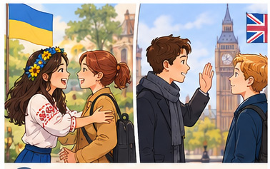
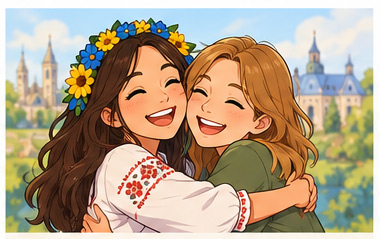
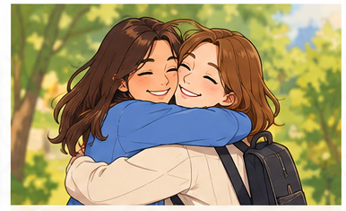
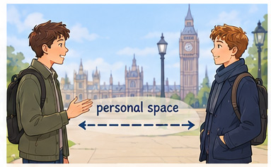
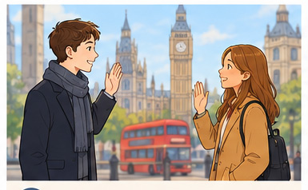
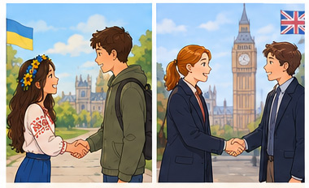
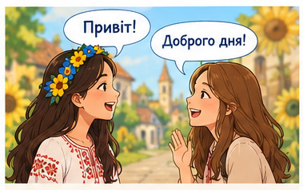
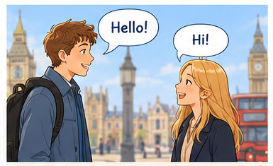
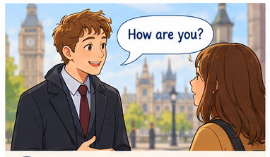
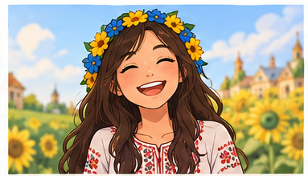

index
Greetings in Ukraine and Britain

Greetings in Ukraine and Britain are different.
Привітання в Україні та Британії є різними.

Ukrainians are very warm and friendly.
Українці дуже теплі та приязні.

They often hug their close friends.
Вони часто обіймають своїх близьких друзів.

British people like personal space.
Британці люблять особистий простір.

They usually do not hug.
Вони зазвичай не обіймаються.

In both countries, people shake hands.
В обох країнах люди тиснуть руки.

Ukrainians say "Pryvit" or "Dobroho dnia".
Українці кажуть «Привіт» або «Доброго дня».

British people say "Hello" or "Hi".
Британці кажуть «Hello» або «Hi».

The British always ask "How are you?".
Британці завжди запитують «Як справи?».
Ukrainians ask this only to friends.
Українці запитують це лише у друзів.

Ukrainians smile with real joy.
Українці посміхаються зі щирою радістю.
British people smile to be polite.
Британці посміхаються, щоб бути ввічливими.
index